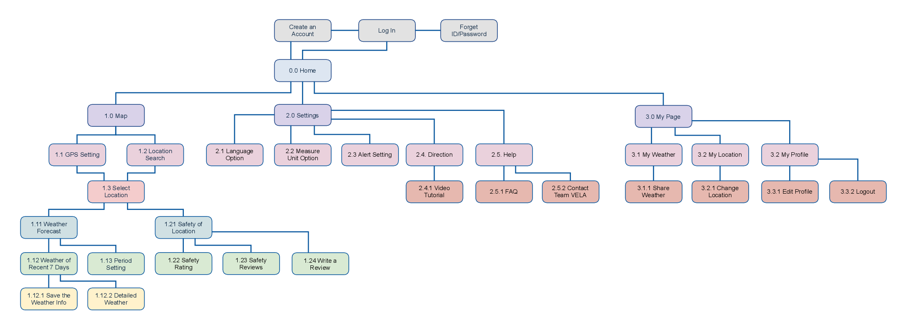

VELA - Case Study
1. Overview
- My Role: UX/UI Designer (from competitor analysis to final UI design)
- Timeline: October 2017 - May 2018 (8 months in total)
- Tools: Figma, InVision, Marvel, Zeplin, Balsamiq
VELA is a mobile application for water sports enthusiasts. It is an individual project conducted as a part of UX immersion course at CareerFoundry. In CareerFoundry's UX immersion course, all the students are given 4 project theme, and they have to choose one of those and design a mobile/web application by themselves, using the UX principles they have learned.
Here, I chose VELA, a weather forecast application, and in this project, I covered the whole UX and UI design process - from competitor analysis to final prototyping.
The main features of VELA are as follows:
- Real-time weather forecast service, based on each user's location
- Safety check service
- Rating the safety of each region
- Sharing water sports experiences & safety tips
2. Competitor Analysis
To play water sports safely, checking weather forecast of the day and information about water sports places is an essential thing. Thus, after deciding to make an application for water sports enthusiasts, I conducted competitor analysis regarding 3 existing marine weather applications - GPS Route Navigation & Weather, Yachting Weather and Buoyweather.
Through the analysis, I could learn the ways how each application is made to help users, and find the problems that the users are facing and need to be solved as follows:
- Complicated weather graphs which may confuse users
- Lack of onboarding pages, which makes users browse all the features and waste time
- Lack of information or review about each place, especially about safety
3. User Interview
After finding user problems on the existing applications, I conducted user interview to listen to the opinion of users in real-world. 3 people were interviewed with the goals as follows:
- To understand how users feel about weather information graph
- To understand the ways that users try to browse the application and know how to use it
- To find the preferred location that users visit for watersports
- To find out what sort of features that users want the most from VELA
- To find out potential problems that users may face during they plan for watersports and when they visit watersports spots
After the interviews, I made affinity maps to analyse the results and organise the information I got during the interviews.
Through the process, I could learn what prospective users want as follows:
- Graphs with animation
- Option for metrics (e.g. Fahrenheit, Celsius, etc) and location
- To be able to search both indoor(e.g. gym, swimming pool) and outdoor location(e.g. beachside, lake)
- To provide contact information of each region(e.g. telephone number, email, etc)
- To be provided in English
- To show caution message when the weather condition is bad to play watersports, or if the spot is not recommended for beginners
- To locate tutorials/direction within ‘Setting’ section, not to make users confused and give up to use the application
- To show real-time information
4. User Personas
Based on the user research results, I created 2 personas - as prospective users. Through persona creation, I could reorganise the user problems and the things that prospective users want.
5. User Journey Maps & User Flows
Based on each persona’s information, I created user journey maps. To look back user behaviours and provide solutions carefully, I covered all the stages - from preparation and each persona’s experience after playing water sports.
By user journey map creation, I could check expected user behaviours, and think of which one I should pick and make into core features and service of VELA - among the opportunities I got from user journey maps.
Based on circumstances stated on user journey maps, I set up 5 objectives that the users will have whilst using VELA:
- To check weather information for free
- To check weather forecast of particular periods
- To change language option
- To check safety rating
- To check the detailed weather forecast
With the objectives, I also created user flows to set up each step in a user-friendly way.
The user flows have become guidelines to design service and features of VELA, and I could think of methods to make the flows more convenient from users’ perspectives.
6. Information Architecture & Sitemaps
From the user journey maps and the user flows, I picked some related keywords, and had time to organise the keywords as a form of a sitemap. Card sorting tests were conducted in this stage.
It was an essential step before making a sitemap, as I need to check users' opinions at first - to make the organisation of each information more logical and easier to find from the viewpoints of users. After analysing the test results, I created VELA's sitemap as follows:
7. Low-Fidelity Prototype
Based on the sitemap, I initially created the wireframes of core features on papers. In this stage, I could effectively plan where to display each feature, and how to design the layout of each screen.
8. Mid & High-Fidelity Prototype
Creating paper prototypes was strongly helpful to think of which feature can be displayed on which part of the application. In the next step, I needed to define the design and layout more in detail. Thus, I created mid-fidelity wireframes using Balsamiq, and a high-fidelity prototype using Figma.
As I focused more on features and interaction within each screen, I made the wireframes into greyscale in this stage.
9. Usability Testing & Iteration
With the first version of the prototype, I conducted usability testing with 6 people. Through the tests, I intended to look the interaction between the users and the prototype, and to find the parts in which revision is needed.
All the tests were held for 4 days. Based on the test results, I prioritised 4 issues, and made revision as follows: